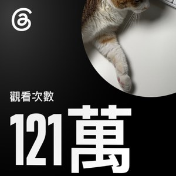
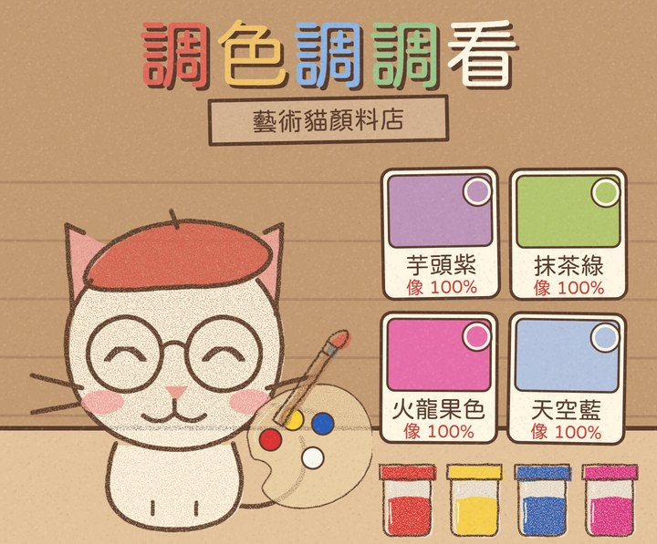
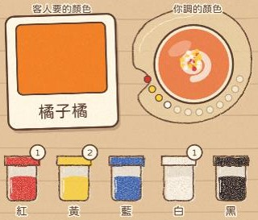
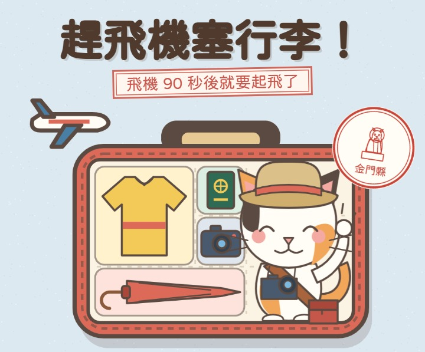
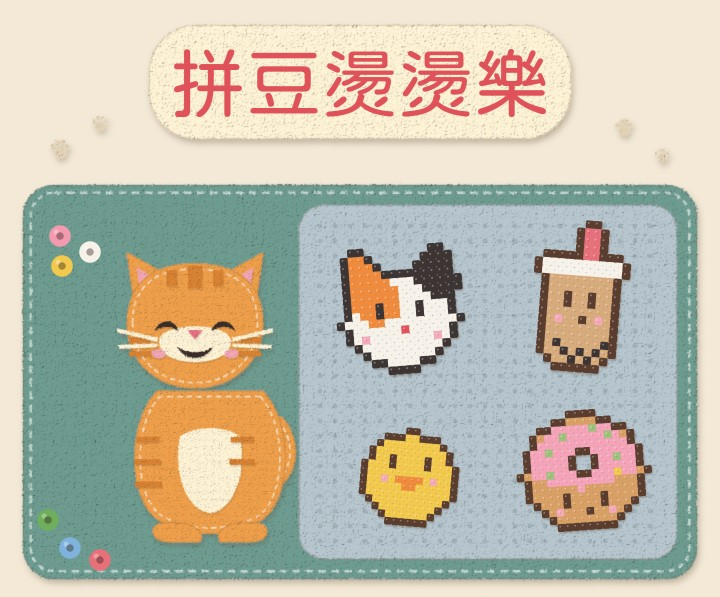
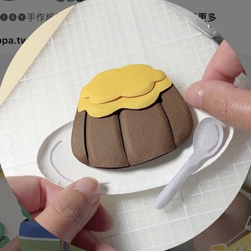

和 Daisy 一起做小遊戲
幫你的品牌、商店或展覽，做一款玩 60 秒就記住你的手機小遊戲。
- 點了就能玩
- 不用下載、不用登入
- 一根手指玩
- 手繪貓咪畫風
大家都在玩

125 萬
Threads 過去 30 天
貼文瀏覽次數

15 萬+
「調色調調看」
一篇貼文的瀏覽

2.4 萬
人次玩過
「調色調調看」
22 款
已上架遊戲
每週新上 3 款
Threads 官方數據與網站計數・2026 年 11 月
代表作
調色調調看
🔥 Threads 15 萬+ 瀏覽
考眼力：調出跟色卡一樣的顏色，看你幾 % 準。
蓋好蓋滿！
🔥 Threads 7 萬+ 瀏覽
全台 22 縣市紀念章，地方特色變成關卡。
積木疊疊樂！
🔥 Threads 2.8 萬+ 瀏覽
邊玩邊學英文單字，適合教育、親子主題。

趕飛機塞行李！
🔥 Threads 1.2 萬+ 瀏覽
90 秒把東西塞進行李箱，適合旅遊、航空、行李箱品牌。

拼豆燙燙樂
🎮 5,500+ 人玩過
一顆顆拼出圖案，圖案能換成你的商品或 logo。

調水溫！
✨ 最新上架
每個人都被飯店水龍頭整過，一玩就有共鳴，適合飯店、旅宿、衛浴品牌。
可以幫你做什麼
品牌主題遊戲
你的產品變成遊戲裡的道具和關卡，玩完就記得你家有什麼。
活動、展覽、市集限定
現場掃 QR code 就能玩，分數截圖換小禮物，排隊也不無聊。
新品上市
用一款小遊戲介紹新口味、新商品，比一張海報更讓人想分享。
吉祥物出場
用 Daisy 手繪的貓，或請你的吉祥物當主角。
合作流程
- 來信告訴我們你的品牌、想讓大家記住什麼
- Daisy 提 2～3 個玩法給你選
- 做好試玩版，一起玩、一起改
- 上線：放在你的網站或活動頁，也能在 Daisy的遊戲室上架、發文介紹
關於 Daisy

Daisy 是紙藝術家，在社群分享紙作品。她同時經營藝術貓、旅遊貓、手作貓、英語貓四個貓頻道；遊戲裡的貓都是她的角色，每一款都是原創玩法：題目、畫面和難度由 Daisy 決定，製作時用 AI 協助，所以試玩版出得快，想改也改得快。